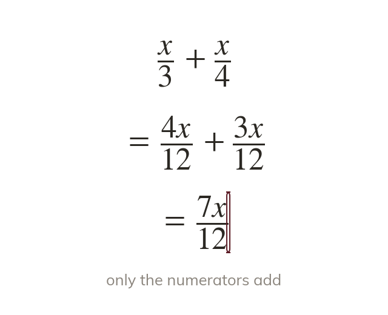
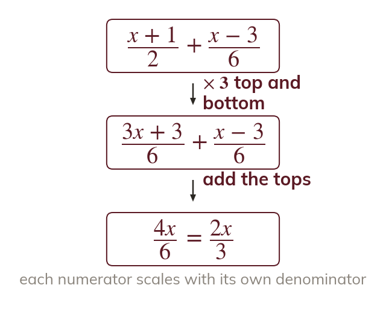
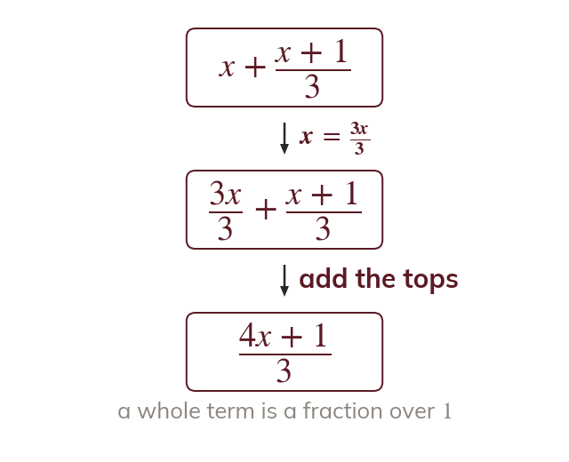
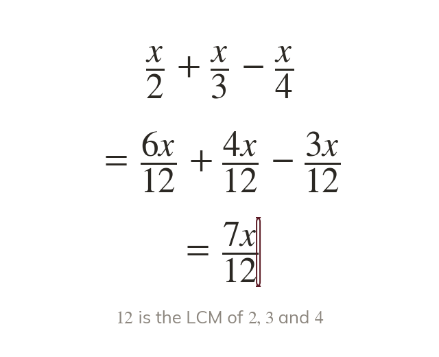

Same denominator, then add
Fractions add only once they share a denominator. Then only the numerators add.
Adding algebraic fractions is the step before solving equations with fractions in them. Today we give the fractions a common denominator and combine them into one.
Work down the page at your own pace. Write every answer in your book first, then click to check it.
Read each card, then follow the worked examples one step at a time.

Fractions add only once they share a denominator. Then only the numerators add.

Each numerator is multiplied by whatever its own denominator was. The whole numerator is scaled, so it goes in a bracket.
Pick an answer. If it's wrong, the feedback tells you which mistake it was.
Read each card, then follow the worked examples one step at a time.

A whole term is a fraction over
Write it over the common denominator before adding.

The LCM of all three denominators is the common denominator. Each numerator scales by its own factor.
Pick an answer. If it's wrong, the feedback tells you which mistake it was.
Finished? Next lesson: 11H.3.6 Adding Fractions with Algebraic Denominators.
For each skill, tap the one that is true for you today. Your Revise pages start with anything you mark Not yet.
Your ratings are saved on this device only.
Log in, then search for a code to practise that skill.
Videos, worksheets and more on each part of this lesson.